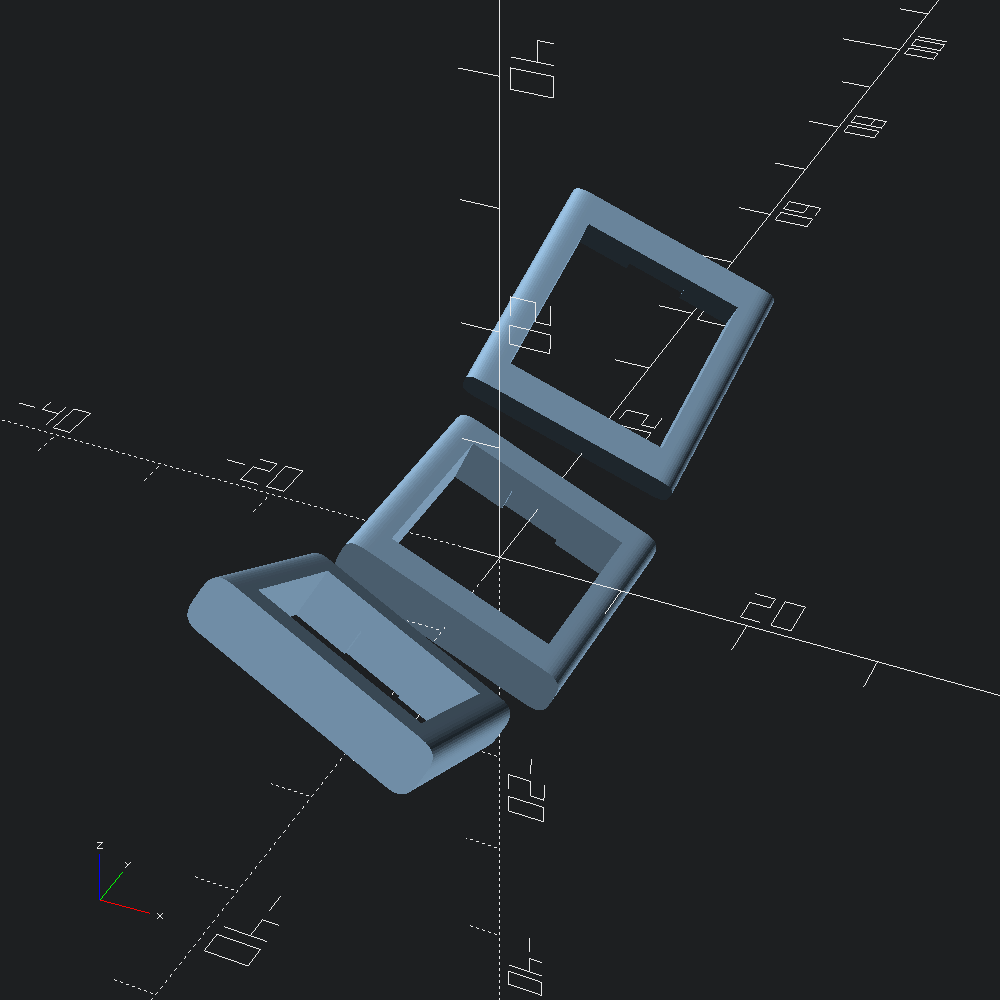
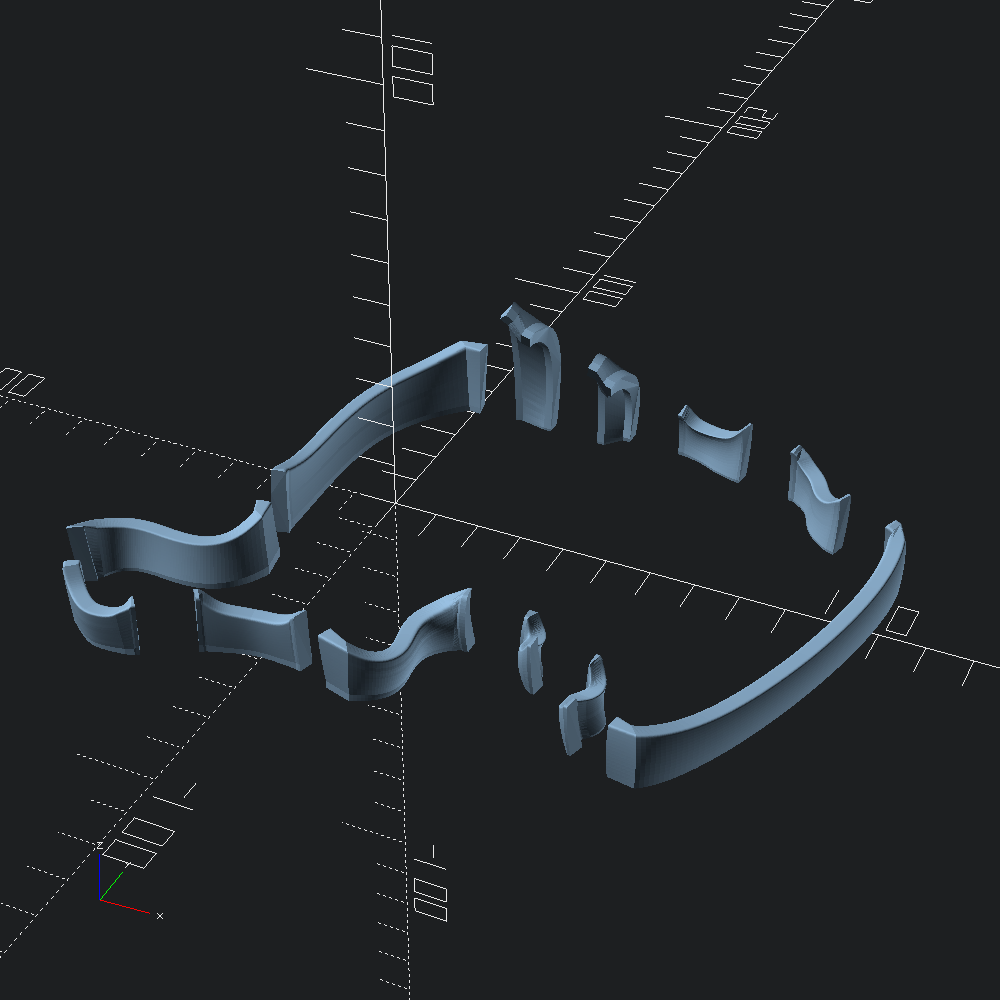
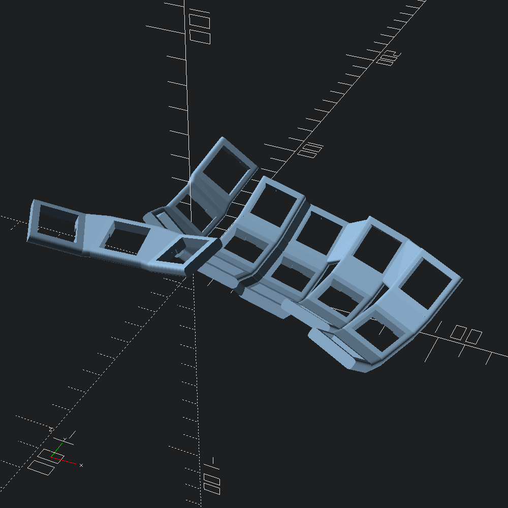
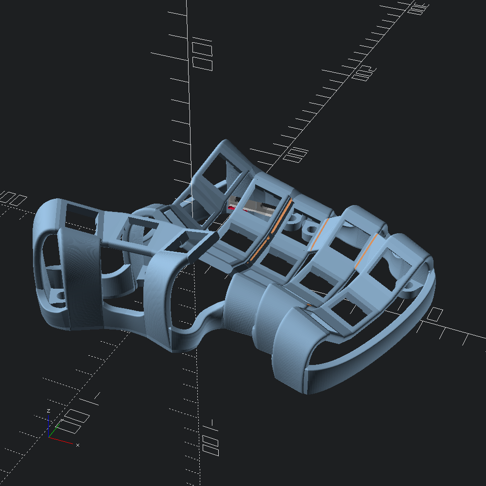
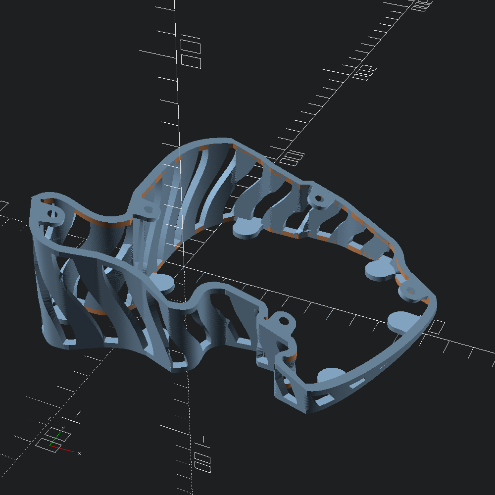

Basic Usage Walkthrough
open OCADml
open OSCADml
open DometylFirst, lets make our keyhole early as we'll need it for viewing intermediary results in this walkthrough. Here we define an mx keyhole with bezier roundovers on the sides, with a minimum clearance of 2. from the table (to give space for wiring etc below the switch plate).
let keyhole =
Mx.make_hole
~clearance:2.
~corner:(Path3.Round.bez (`Cut 0.5)) (* roundover cut in from corner *)
~fn:16 (* number of points in the bezier rounded corners *)
()We can write our keyhole to an OpenSCAD script by first obtaining the Scad.t, then using OCADml.Scad.to_file. Doing this can be a quick way to get a better look at individual pieces of our models, so we'll be doing it at steps throughout this guide (though doing so is not required for the usual keyboard generation config workflow).
let () = Scad.to_file "keyhole.scad" @@ Key.to_scad keyhole

Next, we'll describe how we would like our keyholes to be arranged into columns to form the switch plate. The Plate.Lookups.body constructor takes a set of lookup functions from column indices to values governing the construction and placement of each of the columns independently.
~offset allows us to set the xyz offset of our columns, particular mind paid to y and z stagger, which helps adjust column placement to the lenghts of our fingers:
let offset = function
| 2 -> v3 0. 3.5 (-5.) (* middle *)
| 3 -> v3 1. (-2.5) 0.5 (* ring *)
| i when i >= 4 -> v3 0.5 (-18.) 8.5 (* pinky *)
| 0 -> v3 (-2.5) 0. 5. (* inner index *)
| _ -> v3 0. 0. 0. (* home index *)We use ~curve to define a Curvature.t with which our keyholes will be distributed for each column. For our main switchplate columns, we'll usually be distributing keys to points at increasing angles along a circle of a given ~radius drawn on the yz plane. To do this we can use Curvature.well, and give the result to the ~well parameter of the Curvature.curve constructor.
To angle the inner index column towards the home index column (with a y-axis rotation), bringing the tops of the keys closer together, we can use the ~tilt parameter of Curvature.well.
let curve = function
| i when i >= 3 ->
(* ring and pinky *)
Curvature.(curve ~well:(well ~radius:37. (Float.pi /. 4.25)) ())
| i when i = 0 ->
(* inner index *)
Curvature.(
curve ~well:(well ~tilt:(Float.pi /. 7.5) ~radius:46. (Float.pi /. 5.95)) ())
| _ -> Curvature.(curve ~well:(well ~radius:46.5 (Float.pi /. 6.1)) ())To get an idea of how these curvature descriptions will go on to be used, we can try out Curvature.apply directly for a 3 row column using the tilted inner index curvature (curve 0) defined above.
let () =
List.init 3 (fun row ->
Key.to_scad @@ Curvature.apply ~centre_idx:1. (curve 0) row keyhole )
|> Scad.union
|> Scad.to_file "column_keys.scad"
If the value of ~splay is non-zero for a particular column, it will be z-axis rotated about its centre-point (see ~centre below). Some find that angling out the ring and pinky finger columns like this better matches the path that that those fingers take when they are extended. As the columns are pushed further out as a result, it can be important to try and shave off as much x spacing between the columns as possible to avoid strain from over splaying the fingers.
let splay = function
| i when i = 3 -> Float.pi /. -25. (* ring *)
| i when i >= 4 -> Float.pi /. -11. (* pinky *)
| _ -> 0. (* none for the rest *)These are the default values for the rows, swing, and centre parameters to Plate.Lookups.body, but we'll include them here as an example of defining them.
rowssets how many rows each column should haveswingindicates that the column should be swung with a y-axis rotation. This can be thought of like the row curvature of traditional dactyls, except applied to columns independently, rather than being a means of distributing the columns horizontally.centresets a row "index" to serve as the centre of curvature for the column. As this is a float, rather than an integer, it can lie between rows, rather than being constrained to them.
let rows _ = 3
let swing _ = 0.
let centre _ = 1.Finally, we'll construct our body_lookups, which we'll be handing to Plate.make.
let body_lookups = Plate.Lookups.body ~offset ~curve ~splay ~swing ~rows ~centre ()For our thumb cluster, we'll just provide ~curve, and leave the rest as default. Note that we are making use of Curvature.fan, which places keys along a circle laying on the xy plane, in conjunction with well this time.
let thumb_lookups =
let curve _ =
Curvature.(
curve
~fan:(fan ~radius:70. ~tilt:(Float.pi /. 48.) (Float.pi /. 9.))
~well:(well ~radius:47. (Float.pi /. 7.5))
())
in
Plate.Lookups.thumb ~curve ()Now with our body_lookups and thumb_lookups complete, we'll finish off our plate specification with some of the more tersely defined parameters of Plate.make.
let plate_builder =
Plate.make
~n_body_cols:5 (* number of columns *)
~body_lookups
~thumb_lookups
~thumb_offset:(v3 (-13.) (-41.) 10.) (* translation *)
~thumb_angle:Float.(v3 (pi /. 40.) (pi /. -14.) (pi /. 24.)) (* rotation *)
~caps:Caps.Matty3.row (* strictly for visualizing *)
~thumb_caps:Caps.MT3.(fun i -> if i = 1 then space_1_25u else space_1u)This plate_builder is left as a closure, since our Key.t will be passed to it within the Case.make constructor, but we can take a peak at our efforts so far by applying it ourselves.
let switch_plate = plate_builder keyhole
let () = Scad.to_file "switch_plate.scad" @@ Plate.to_scad switch_plate

Note how the columns have not been connected in any way yet. We'll be adding some bridging reinforcements later when we build the rest of the case.
The next major part of our keyboard to design are the walls projecting from the keys of our switch plate to the xy-plane. The Walls.auto_body and Walls.auto_thumb helpers are provided as a means to do so automatically with defaults that should be (at least close to) adequate for typical skeletal cases. Note that our body_builder and thumb_builder functions below take a Plate.t as a parameter, as we'll be passing our wall_builder along to Case.make much like plate_builder.
let body_builder plate =
Walls.auto_body
~d1:(`Abs 14.) (* distance outward from key face to project before descent *)
~d2:10. (* distance away from key that the wall should hit the xy plane *)
~n_steps:(`PerZ 0.5) (* resolution of walls scaling relative to z height *)
~scale:(v2 0.8 0.9) (* scale wall by these factors in width and thickness *)
~scale_ez:(v2 0.42 1., v2 1. 1.) (* bezier easing of the scaling *)
plateIn addition to the parameters we're defining in body_builder above, we'll also specify the _lookup parameters for Walls.auto_thumb that flag whether or not perimeter key faces at particular indices should have walls projected from them or not.
let thumb_builder plate =
Walls.auto_thumb
~d1:(`Abs 14.)
~d2:8.
~n_steps:(`PerZ 0.5)
~north_lookup:(fun _ -> false) (* no walls on the north side*)
~south_lookup:(fun i -> i <> 1) (* no wall at position 1 in the south *)
~east_lookup:(fun _ -> false) (* no walls on the east side *)
~west_lookup:(fun _ -> true) (* include a wall each (just one) western face *)
~scale:(v2 0.8 0.9)
~scale_ez:(v2 0.42 1., v2 1. 1.)
plate
let wall_builder plate =
Walls.make ~body:(body_builder plate) ~thumb:(thumb_builder plate)We'll see the walls hooked up to the rest of the case later, so here they are without any pesky context to block the view.
let walls = wall_builder switch_plate
let () = Scad.to_file "walls.scad" (Walls.to_scad walls)

So there are walls projecting our switch plate to the ground, but we still have to "wire" them up to create a complete perimeter base for our case. For that, we turn to the Connect module, which includes the helper (in the same spirit at the auto_ functions in Walls) that we'll be using for this case: Connect.skeleton. The skeleton connection generator defaults to using filleted sweeps along splines running along the xy plane between neighbouring walls, with the option to specify that certain walls should instead have the gap fully closed off (see close_thumb and _joins parameters).
let base_connector =
Connect.skeleton
~height:13. (* default spline connection height *)
~index_height:16. (* height of index column connections *)
~thumb_height:14. (* height of thumb cluster connections *)
~corner:(Path3.Round.bez (`Joint 2.)) (* top corner roundovers *)
~corner_fn:16 (* roundover resolution *)
~north_joins:(fun i -> i < 2) (* fully join walls until the middle finger *)
~south_joins:(fun _ -> false)
let connections = base_connector walls
let () = Scad.to_file "connections.scad" (Connect.to_scad connections)
As mentioned earlier when we made our plate, we'd like to add some structural support between our columns as well. For that we have the ~plate_welder parameter of Case.make -- a function that takes a Plate.t as argument, and returns a Scad.t to add on to the plate when the case is built.
The Plate.skeleton_bridges helper roughly mimics the pattern seen on the BastardKB Skeletyl, and will often be adequate for similar designs, but here we'll add in a little extra reinforcement by using Bridge.cols to seal up between the index and middle finger columns.
let plate_welder plate =
Scad.union [ Plate.skeleton_bridges plate; Bridge.cols ~columns:plate.body 1 2 ]
let () =
Scad.to_file "plate_glue.scad"
@@ Scad.add (Plate.to_scad switch_plate) (plate_welder switch_plate)
For the splaytyl (which this guide is based on), the BastardKB Elite-C holder is used to mount the MCU inside the case, so the ~ports_cutter parameter of Case.make will be set accordingly. The basics of Ports.reversible_holder are the similar though. Initial placement of the additions/subtractions to the case that these functions provide is automated depending on the location of the index column walls, but it isn't perfect of course, so offset and rotation parameters are available to fudging things to get the fit right for your particular case.
let ports_cutter = BastardShield.(cutter ~x_off:0. ~y_off:0. (make ()))Finally, we're ready to build our case. As each of the values defined along the way have been named according to the ~keyword parameters that Case.make takes, we can just apply them with punning at this stage. Since this example config uses plain Mx holes without hotswap, our model will be fully mirrorable, so no need to fuss with the ?right_hand parameter to get each hand of our case. For examples of doing so, check out the example configs in the dometyl repo.
let case =
Case.make
~eyelets:(Case.eyelets ~config:Eyelet.m4_config ())
~plate_builder
~plate_welder
~wall_builder
~base_connector
~ports_cutter
keyhole
let () = Scad.to_file "right_case.scad" (Case.to_scad case)
Next, we can generate a base plate to go along with the case by using Bottom.make. The form and fastener placement is automatic based on the given case, but bumpon size and location can be adjusted depending on materials used, and peculiarities of the case that mean the default locations leave a bit to be desired.
Here, to specify bumpon locations, we give a list of column and row Idx.ts under which they will be roughly placed, along with relative coordinates ((v2 0.5 0.5) being directly under the centre of the keyhole) to offset by.
let bottom =
let bump_locs =
Bottom.
[ thumb ~loc:(v2 0.5 0.2) Last First
; thumb ~loc:(v2 0.7 0.) Last Last
; body ~loc:(v2 0. 1.) First Last
; body ~loc:(v2 0.5 1.2) (Idx 3) Last
; body ~loc:(v2 0.9 0.8) Last Last
; body ~loc:(v2 0.8 0.) Last First
]
in
Bottom.make ~bump_locs caseLet's take a look at it rotated around so that we can see the more interesting side.
let () =
Scad.to_file "right_base_plate.scad" (Scad.zrot Float.pi @@ Scad.xrot Float.pi bottom)

Tenting bases with bumpon feet can be similarly generated using the Tent module.
let whiffle_tent = Tent.make ~style:(Tent.prison ()) case
let () = Scad.to_file "right_tent.scad" whiffle_tent